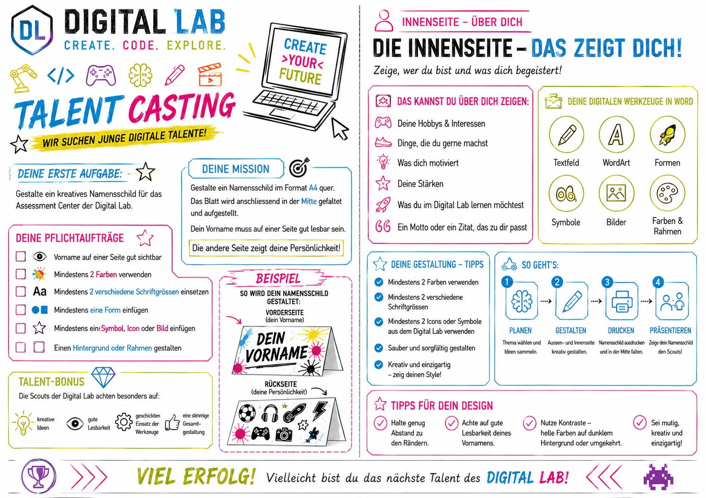
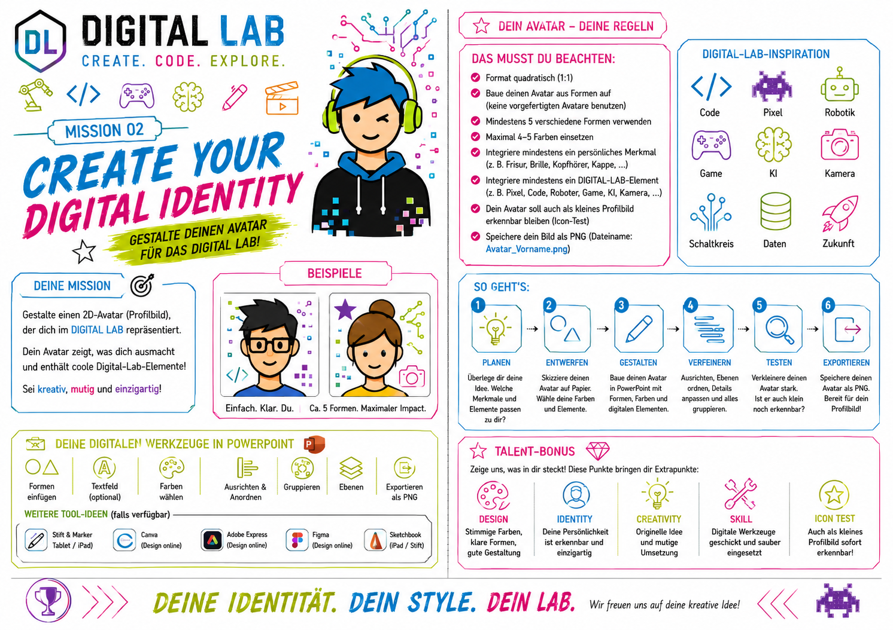
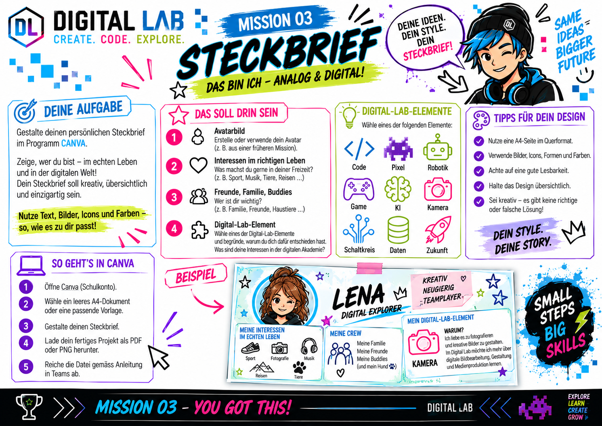

digital LAB · Einstieg
Gestalte dein Namensschild, entwickle deinen Avatar und zeige im Steckbrief, was dich analog und digital begeistert.
Mission 01 · Talent Casting
Vorschau des Auftragsblatts

Auftragsblatt Namensschild herunterladen (PDF)
Gestalte in Word ein Namensschild im Format A4 quer. Auf eine Hälfte kommt dein Vorname, gut lesbar aus der Distanz. Die andere Hälfte zeigt deine Persönlichkeit, etwa deine Hobbys, Stärken, Lernziele oder dein Motto.
to do
- Verwende mindestens zwei Farben und zwei verschiedene Schriftgrössen.
- Füge mindestens eine Form und mindestens ein Symbol, Icon oder Bild ein.
- Gestalte einen Hintergrund oder Rahmen.
- Drucke das Blatt, falte es in der Mitte, stelle es auf und präsentiere dein Schild.
Talent-Bonus: Achte auf Kontraste, genügend Randabstand und eine stimmige Gesamtgestaltung. In Word helfen dir Textfelder, WordArt, Formen und Symbole.
Mission 02 · Create Your Digital Identity
Vorschau des Auftragsblatts

Auftragsblatt Avatar herunterladen (PDF)
Entwirf in PowerPoint einen quadratischen 2D-Avatar (1:1), der dich im digital LAB repräsentiert.
Das muss dein Avatar können
- Baue ihn selbst aus mindestens fünf verschiedenen Formen und verwende maximal vier bis fünf Farben.
- Integriere ein persönliches Merkmal wie Brille, Frisur, Kopfhörer oder Kappe.
- Ergänze mindestens ein digital-LAB-Element, etwa Pixel, Code, Robotik, Game, KI oder Kamera.
- Halte die Formen so klar, dass der Avatar auch als kleines Profilbild erkennbar bleibt.
Skizziere deine Idee, baue den Avatar mit Formen, ordne die Ebenen und gruppiere die Teile. Speichere ihn als Avatar_Vorname.png.
Avatar-Check
Wähle deine PNG-Datei. Vergleiche die beiden Profilgrössen. Welches Detail erkennst du auch bei 32 Pixeln? Das Bild wird nur in deinem Browser angezeigt.
Mission 03 · Steckbrief
Vorschau des Auftragsblatts

Auftragsblatt Steckbrief herunterladen (PDF)
Gestalte mit deinem Schulkonto in Canva einen persönlichen Steckbrief auf einer A4-Seite im Querformat. Zeige, wer du im echten Leben und in der digitalen Welt bist.
Das gehört in deinen Steckbrief
- Dein Avatar aus Mission 02 oder ein neu gestalteter Avatar.
- Deine Interessen im echten Leben, etwa Sport, Musik, Tiere oder Reisen.
- Wer dir wichtig ist, etwa Familie, Freund:innen oder Haustiere. Du entscheidest, welche Details du teilst.
- Ein digital-LAB-Element wie Code, Pixel, Robotik, Game, KI, Kamera, Schaltkreis, Daten oder Zukunft. Erkläre, warum du es gewählt hast und was du dazu lernen möchtest.
Ordne Text, Bilder, Icons und Farben übersichtlich an. Lade deinen Steckbrief als PDF oder PNG herunter und reiche ihn gemäss Auftrag in Teams ein.